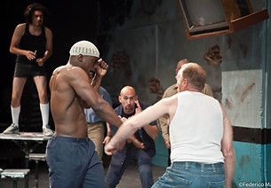

Thursday and Friday, July 12 and 13 | 8:30 P.M.
URBAN THEATRE MOVEMENT | Los Angeles, California, USA
SHORT EYES
Written by Miguel Piñero | Directed by Julian Acosta
Short Eyes, a term prisoners use to brand a child molester, reveals the racial, sexual and dangerously seditious personal politics wielded by an explosive group of inmates at an unnamed house of detention in New York City. Their petty ploys and communal rebellions are unexpectedly disturbed when they are joined by a middle-class white man accused of raping a young girl. (In English; brief nudity and strong language; not appropriate for children)
Carnival Studio Theatre, Adrienne Arsht Center | 1300 Biscayne Boulevard, Miami
Tickets: 305.949.6722 | 866.949.6722 | www.arshtcenter.org